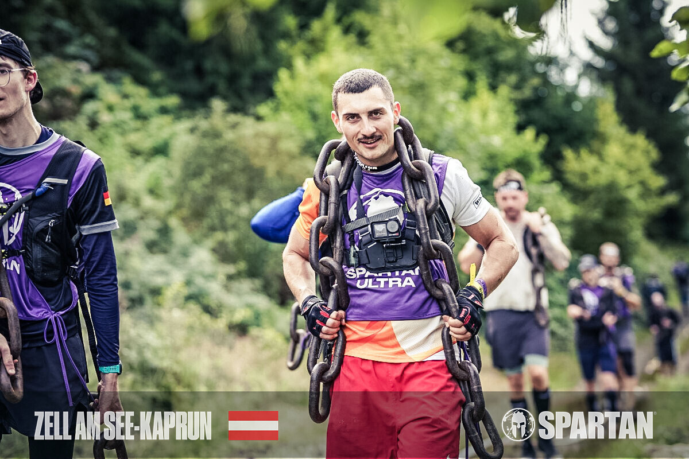
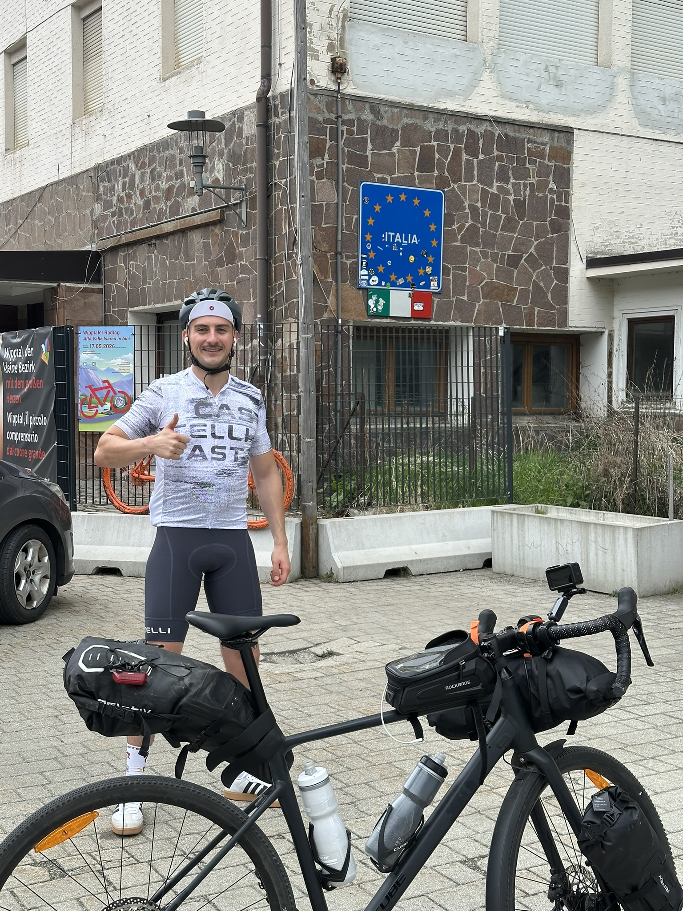
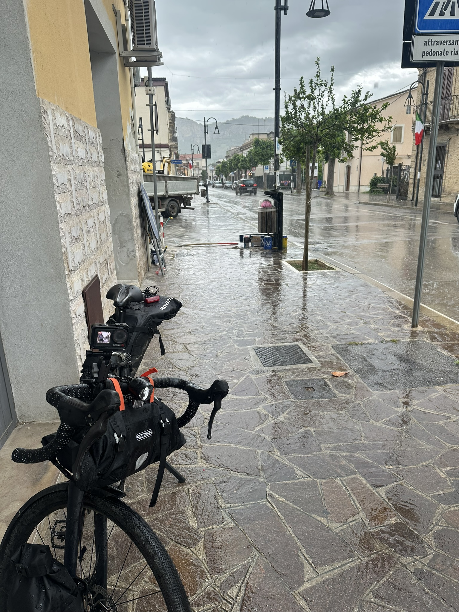
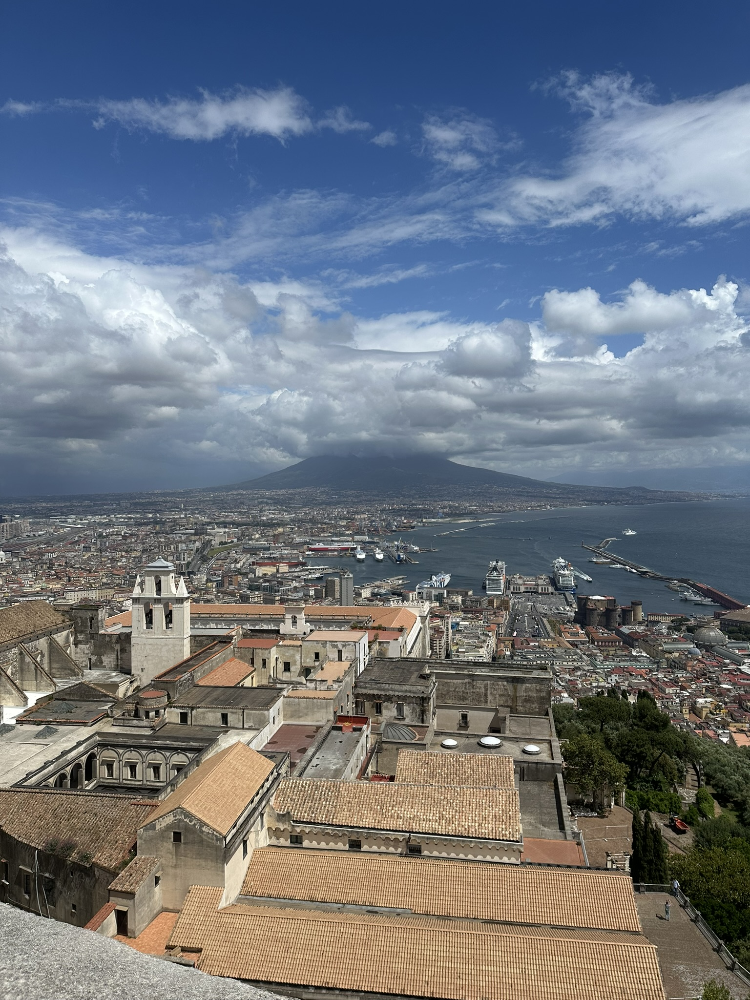

Abenteuer
Spuren bleiben. Grenzen verschieben.
Ob laufend oder auf dem Rad: Ich mag Herausforderungen, die Geduld, Disziplin und einen klaren Kopf verlangen.
Ultra Hindernislauf
Spartan Ultra Zell am See 2025
Im Sommer 2025 habe ich mich spontan dazu entschlossen, den Marathon zu überspringen und sofort mit Ultraläufen anzufangen. Auf meiner Recherche nach den härtesten Rennen Europas bin ich auf den Spartan Ultra in Zell am See/Kaprun gestoßen - ein Ultramarathon durch die Alpen mit 60 Hindernissen. Drei Monate lang bin ich ausschließlich mit dem Fahrrad in die Arbeit, um auf ausreichend Trainingsvolumen zu kommen. Nach einem harten Sommer mit bis zu 24h Trainingszeit pro Woche war ich bereit für diese Herausforderung.
- FokusAusdauer · Strategie · Mentalität



Bikepacking
Innsbruck nach Neapel
Vor ein paar Jahren war ich bereits in Neapel und vermisste seither das gute Essen und das einzigartig chaotische Flair der Stadt. Im frühen Sommer 2026 habe ich mir somit zwei Träume gleichzeitig erfüllt - wieder einmal Neapel zu sehen und meine erste Fahrradtour. Trotz Fahrradpannen, Straßensperrungen und Kletteraktionen habe ich mich nicht unterkriegen lassen und bin an diesen Herausforderungen gewachsen. Nach fünf Tagen wurde ich letztendlich von meiner Support-Crew bei Sulmona eingeholt und konnte ein paar Tage bei gutem Essen und schönem Wetter entspannen.
- RouteInnsbruck → Bozen → Verona → Rimini → Pescara → Neapel
- Dauer5 Tage (DNF)
- FokusPlanung · Durchhaltevermögen · Beständigkeit


